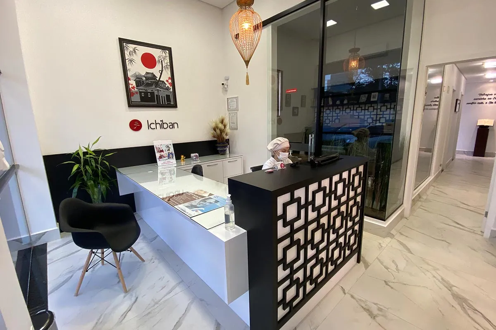
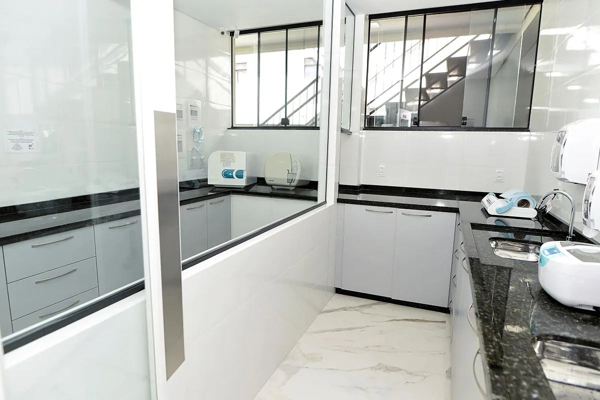
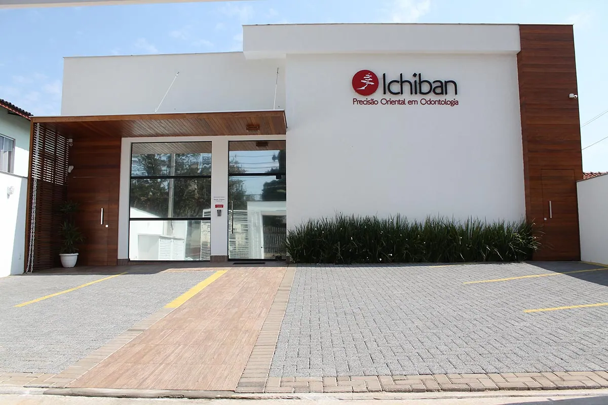

A Clínica
Precisão oriental em odontologia
Mais do que tratar dentes, cuidamos de pessoas. A Ichiban une a cultura japonesa do trabalho caprichado a um atendimento próximo, ético e transparente.

Nosso propósito
Construir relações duradouras, baseadas no respeito, na confiança e no compromisso com o bem-estar de cada pessoa.
- 丁寧Teinei
atençãoCuidado humanizado
Escutamos cada necessidade, respeitamos o tempo de cada pessoa e oferecemos um ambiente seguro e acolhedor para decisões tranquilas.
- こだわりKodawari
caprichoExcelência
Atualização científica constante, protocolos clínicos bem definidos e processos que evoluem para tratamentos com qualidade, segurança e previsibilidade.
- 誠実Seijitsu
honestidadeÉtica e transparência
Apresentamos todas as opções com clareza, explicamos cada etapa e entregamos o orçamento antes de começar.
- 協力Kyōryoku
cooperaçãoTrabalho em equipe
Especialistas que conversam entre si têm uma visão completa de cada caso e planejam juntos o melhor resultado.
Estrutura
Cada ambiente foi pensado para o seu conforto
Da chegada ao consultório: estacionamento próprio, espaço zen, brinquedoteca para as crianças e acessibilidade para cadeirantes.







Acessibilidade
Uma clínica para todos
A Ichiban é acessível para cadeirantes, com toalete adaptado para PCD e fraldário. A Dra. Leidielly Valente é especialista em Pacientes com Necessidades Especiais.
Sou cadeirante e a clínica é totalmente acessível. Ambiente moderno, de uma limpeza incrível. Da recepção ao tratamento, só elogios a fazer.
Tecnologia
Equipamentos que trazem conforto e previsibilidade
Investimos em tecnologia para tornar os tratamentos mais seguros, ágeis e personalizados.

Airflow com protocolo GBT
Limpeza com água morna e pó fino de eritritol, com foco no conforto.

Scanner intraoral
Modelos 3D dos dentes sem massa de moldagem, base do planejamento digital.

Sedação consciente
Óxido nitroso e sedação medicamentosa, com monitoramento, para quem tem medo.

Endodontia mecanizada
Tratamento de canal com limas de níquel-titânio acopladas a um motor.
Biossegurança
Rigor que você não vê, mas sente
A central de esterilização segue protocolos rigorosos para todos os instrumentos. É a mesma precisão do consultório, aplicada aos bastidores.
Depoimentos
Quem conhece recomenda
Ótimos profissionais, equipe totalmente capacitada, estacionamento amplo e seguro. Recomendo!
Ambiente bonito e agradável. Equipamentos modernos com tecnologia atual. Sou cliente há muitos anos e indico a todos.
Equipe incrível, com uma ótima infraestrutura, sempre muito solícitos e simpáticos. Recomendo fortemente!
Primeira consulta
Venha conhecer a Ichiban
Envie sua solicitação pelo site a qualquer hora ou fale com a recepção pelo WhatsApp. O horário é confirmado pela recepção.
- EndereçoRua Canudos, 129
Jardim Higienópolis · Londrina – PR - HorárioSegunda a sexta: 8h às 12h · 13h30 às 18h
Sábado: 8h às 12h - Telefone(43) 3027-5101
- ConvêniosAtendimento particular, com orçamento claro